討伐報酬カード一覧（全20種）
クッキーモンスターを倒すと、提示されたカードから1つを選んで強化できます。カードの効果はその周回のあいだだけ有効で、同じカードを重ねて取るとレベルが上がります。周回の性格を決める、いちばん手触りのある選択です。
報酬カード一覧
「解禁」欄が「スキル解禁」のカードは、転生スキルツリーの報酬枝で対応するノードを取るまで提示されません。効果欄はレベル1時点の内容です。
| カード | 系統 | 解禁 | 効果（Lv.1） |
|---|---|---|---|
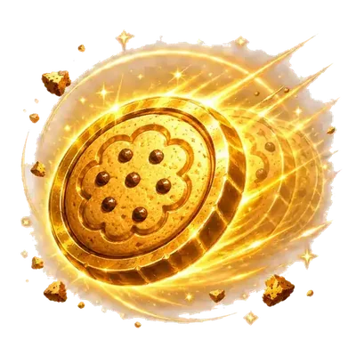 金クッキー出現率アップ |
金クッキー系 | 最初から | 金クッキーの出現間隔 -7%(重ねるほど伸びは緩やか) Lv.1 |
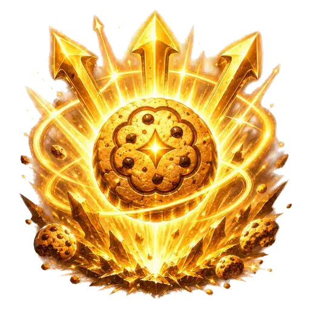 金ブースト倍率アップ |
金クッキー系 | 最初から | 金ブースト倍率 +0.25、ブースト時間も延長(重ねるほど伸びは緩やか) |
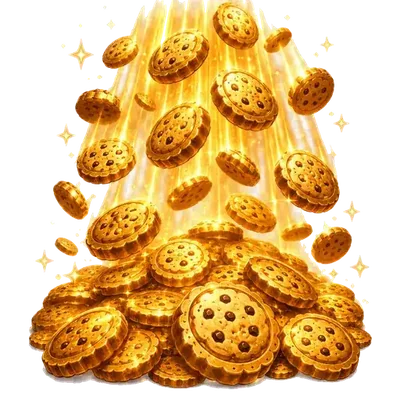 金クッキー獲得量アップ |
金クッキー系 | 最初から | 金クッキー即時獲得量 +8%、ブースト時間も延長(重ねるほど伸びは緩やか) |
| 対モンスターダメージアップ | 怪物狩り系 | 最初から | モンスターへのダメージ +550% |
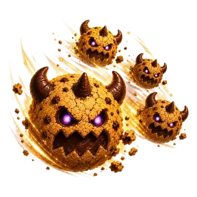 モンスター出現率アップ |
怪物狩り系 | 最初から | モンスターの出現間隔 -16%(重ねるほど伸びは緩やか) Lv.1 |
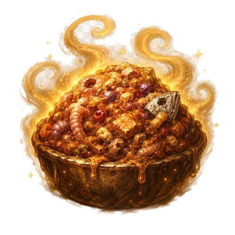 濃い餌 |
怪物狩り系 | 最初から | モンスター滞在 ×1.04(+4%/Lv) Lv.1 |
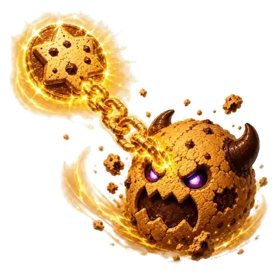 黄金連鎖 |
金クッキー系 | スキル解禁 | 金クッキー取得後、次のモンスターへのダメージ +200% |
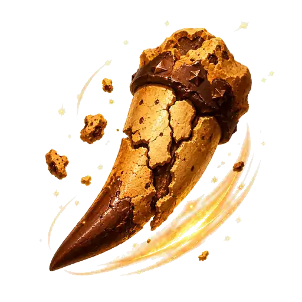 割れた牙 |
怪物狩り系 | スキル解禁 | モンスターへのダメージ +650% |
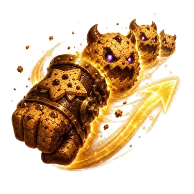 連戦準備 |
リスク系 | スキル解禁 | 撃破後、次のモンスターがすぐ出るようになる。ただし次のHPも増加 Lv.1 |
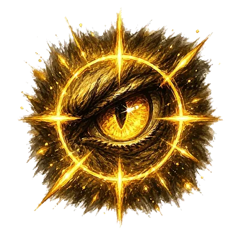 狩猟集中 |
リスク系 | スキル解禁 | 次のモンスターへのダメージ ×2。倒せば報酬Lv+1、時間切れなら報酬Lv-1(次のHPは低下) Lv.1 |
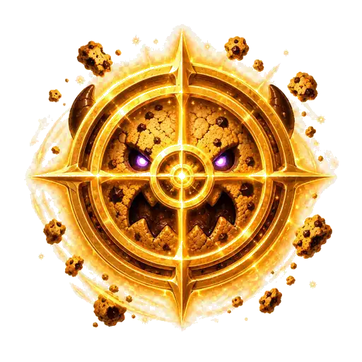 金色標的 |
金クッキー系 | スキル解禁 | 金ブースト中、モンスターへのダメージ +220% |
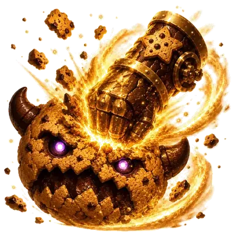 金粉の初撃 |
金クッキー系 | スキル解禁 | 金クッキー取得後、次のモンスターへの初撃ダメージ +250% |
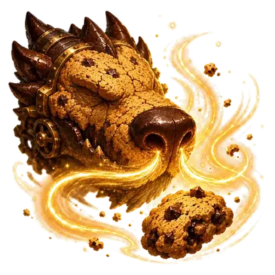 獣の嗅覚 |
金クッキー系 | スキル解禁 | モンスター撃破後、次の金クッキーが早く出る Lv.1 |
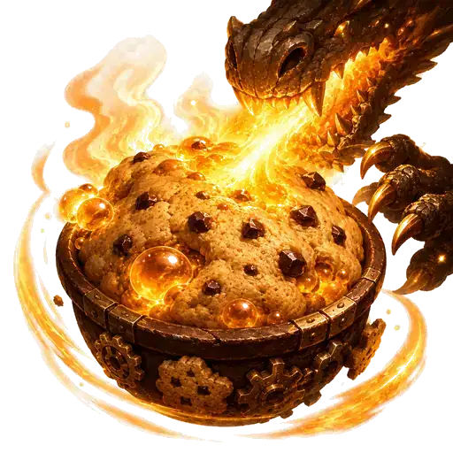 獣熱発酵 |
怪物狩り系 | スキル解禁 | モンスター撃破数に応じて全生産上昇。撃破1体ごとに +15.0% |
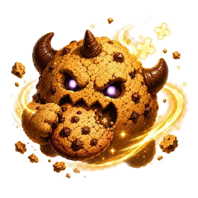 甘噛み回収 |
怪物狩り系 | スキル解禁 | 攻撃ごとにクッキー回収(与ダメ×タップ力・Lvで増加) Lv.1 |
| 砕粉ミル | 設備系 | スキル解禁 | 設備個別強化の効果 +150% |
| 狩猟炉心 | 怪物狩り系 | スキル解禁 | モンスター撃破数に応じて毎秒生産上昇。撃破1体ごとに +18.0% |
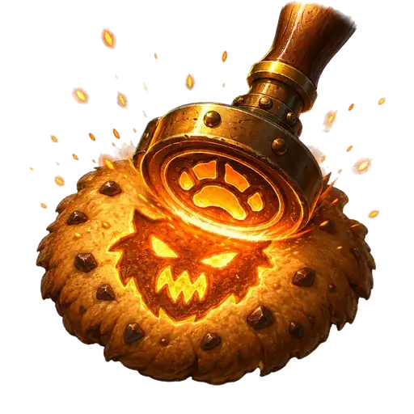 焼き印狩り |
怪物狩り系 | スキル解禁 | モンスターダメージ +45%×√タップ系設備数(強い指・神の指) |
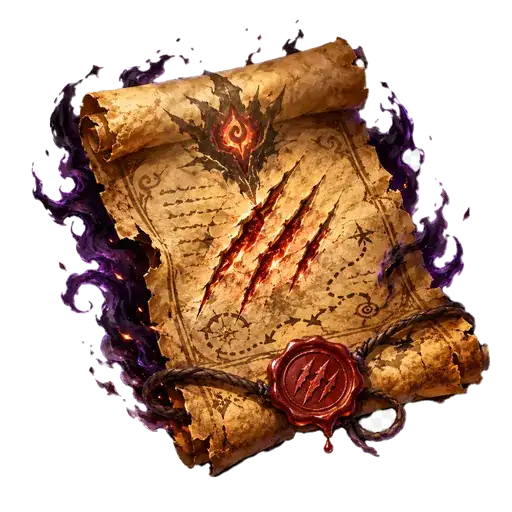 深追いの契約 |
リスク系 | スキル解禁 | 出現間隔 -4%・報酬獲得数 ×1.6、ただしHP ×1.03 Lv.1 |
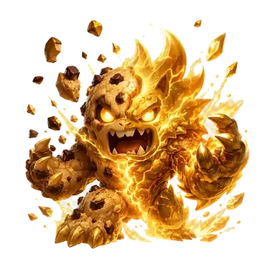 金獣変異 |
リスク系 | スキル解禁 | 金ブースト中に撃破すると、一定確率で報酬Lv +1(重ねるほど確率上昇は緩やか) |
4つの系統
金クッキー系
金のクッキーの出現間隔・獲得量・ブースト倍率を伸ばす系統です。金クッキーは「取るたびに大きく稼げる」瞬間を作るので、この系統を重ねると生産の山が高く・頻繁になります。研究「香料調合」の段階2と組み合わせると、金を取るたびに全生産がバーストします。
怪物狩り系
モンスターへのダメージ・出現率・滞在時間を伸ばす系統です。倒す回数が増えれば報酬カードを取る回数も増えるため、雪だるま式に強くなるのが特徴。「獣熱発酵」「狩猟炉心」は撃破数そのものが生産に変換されるので、狩りを回し続けるほど伸びます。
リスク系
「連戦準備」「狩猟集中」「深追いの契約」など、見返りと引き換えに難度が上がる系統です。次のモンスターのHPが増えたり、時間切れで報酬レベルが下がったりします。討伐火力に十分な余裕がある周回でだけ噛み合います。
設備系
設備の個別強化に関わる系統です。「砕粉ミル」は個別強化の効果を +150%／レベル 押し上げます。設備の個別強化は報酬から直接もらえるため、設備系の報酬相性が高いガード系のモンスターを狙うと集まりやすくなります。
倒す相手で報酬が変わる
報酬で得られるレベルは 基本量 × 相性倍率 で決まります。相性はモンスターの種類と報酬の系統の組み合わせで、たとえば次のようになっています。
| モンスター | 金クッキー系 | 怪物狩り系 | 設備系 | リスク系 |
|---|---|---|---|---|
| クッキーモンスター | ×1 | ×1 | ×1 | ×1 |
| 金環クッキーモンスター | ×1.6 | ×0.8 | ×0.8 | ×0.8 |
| 堅焼きクッキーモンスター | ×0.8 | ×0.8 | ×1.6 | ×0.8 |
| こつぶ群れ | ×0.6 | ×1.6 | ×0.8 | ×1 |
| あわつぶ群れ | ×1 | ×1.4 | ×0.6 | ×1 |
| くろつぶ群れ | ×0.5 | ×1.3 | ×1.2 | ×1 |
| 鉄焼きガード | ×0.5 | ×2 | ×3.5 | ×1 |
| 銀焼きガード | ×1.5 | ×1.5 | ×3 | ×1 |
| 黒鉄ガード | ×0.5 | ×3 | ×2.5 | ×1 |
| はやての運び屋 | ×3 | ×0.5 | ×0.5 | ×1.5 |
| かぜの運び屋 | ×2 | ×0.5 | ×0.5 | ×2.5 |
| よあけの運び屋 | ×2.5 | ×1 | ×1 | ×1 |
| 黄金獣 | ×3.5 | ×1 | ×0.5 | ×2 |
| 白金獣 | ×2.5 | ×0.5 | ×1 | ×3 |
| 緋金獣 | ×3 | ×2 | ×1 | ×1 |
| ステージボス | ×4 | ×4 | ×4 | ×4 |
ステージボスは全系統が ×4.0 と別格です。ボスが出たときは、いちばん欲しいカードを迷わず取って構いません。
カードの選び方
- 周回の序盤は「モンスター出現率アップ」を厚く。狩る回数が増えれば、その後のカード取得数がすべて増えます。
- 次に、方針に合わせて金クッキー系か怪物狩り系のどちらかへ寄せる。系統を散らすとスキル「報酬系統化」のボーナスが弱まります。
- 討伐に時間がかかるようになったらダメージ系を挟む。倒せないと報酬そのものが手に入りません。
- リスク系は、討伐が余裕をもって間に合っているときだけ。時間切れは損失が大きいです。